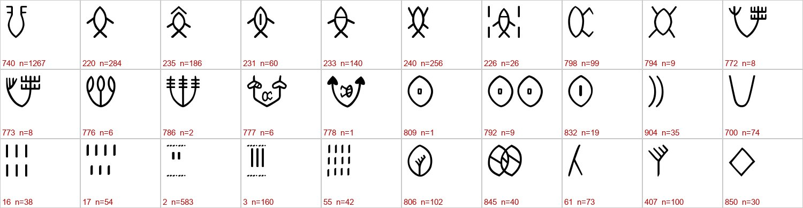
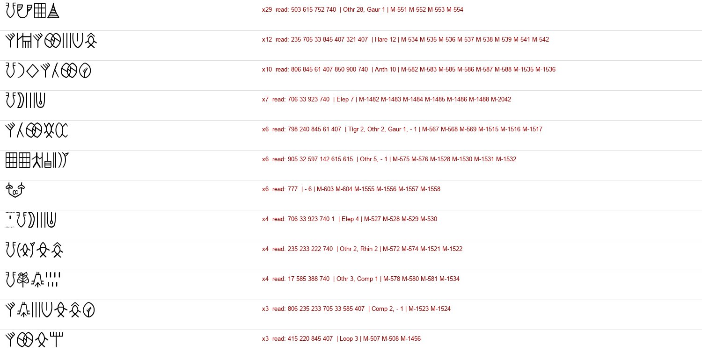

At a glanceAttempted · not read
- The text
- The link given was Asko Parpola’s lecture “Study of the Indus Script” (ICES Tokyo 2005, on harappa.com), which answers the claim that the Indus signs are not writing and sets out his Proto-Dravidian readings. The inscriptions it rests on are some 4,500 seals, tablets and sherds.
- Where
- Two machine-readable corpora: an ICIT-derived database (2,543 objects with CISI numbers) and Mahadevan’s M77 (2,906 texts), tied together here sign by sign; the photographs of the Corpus of Indus Seals and Inscriptions, vol. 1.
- The script
- About 400–600 signs, mostly written right to left; texts average under five signs; no bilingual and no known language.
- How it was tried
- Every count in the lecture and in the book’s table of 24 readings was rerun; the Tamil “attested compound” check was given a chance baseline and run again with Sanskrit and Sumerian; the copper tablets were matched to Parpola’s typology as bilinguals; the grammar was worked out from the corpus.
- What came of it
- The structural claims hold. The star names Ursa Major (7 + fish) and the North Star (fig + fish) rest on one and two seals. A random picture passes the Tamil check 15–48% of the time, and Sanskrit and Sumerian pass it about as often; both even have fish = star homophones. Only the numeral + star names fit Tamil better.
- Still open
- Everything phonetic. Firm points for a future reading: two numeral systems, an ending slot (740/520 then 400/90/151), a name + epithet formula 845 (61) 407, and seven sign = image equations from the tablets.
01 The corpora and the signs
The lecture’s arguments are counts: how often the commonest sign occurs, which signs stand together, which never do. To rerun them the project used two transcriptions made independently of each other. The first is a database derived from the Interactive Corpus of Indus Texts (Wells and Fuls), published with the indus-website project: 2,543 objects, 11,253 signs, CISI object numbers, sites, field motifs. Its signs are numbers only, so they were identified by drawing each one in the database’s own font and matching Parpola’s descriptions. The second is Mahadevan’s 1977 corpus (2,906 texts). The two sign lists were tied together by aligning the texts they share: 991 lines, 96% of signs on a single counterpart, confirmed on the concordance numbers printed in CISI vol. 1.

02 The lecture’s claims, checked
- The commonest sign (the ‘jar’) is almost 10% of all signs: 9.9% in M77, 11.3% in ICIT. It never stands beside itself in South Asia (0, against 4.0 expected if the order within each line were shuffled, p about 0.007), and does so once in each corpus, on the same unprovenanced round seal, as Parpola says.
- Seals found in the Gulf and Mesopotamia use common signs in unusual order: round and cylinder seals sit at the 95th percentile of a bigram model trained on South Asian texts. One square seal (Salut, Oman) is also unusual, against the lecture.
- Fish signs are 9.7% of seal signs; the crab stands beside a fish sign far more often than chance.
- ‘7 + fish’, read as Ursa Major, occurs once, on a single seal from Harappa (H-9), in both corpora. ‘Fig + fish’, the North Star, occurs twice (M-172, and M-414, checked on its photograph in CISI vol. 1). ‘Crab + plain fish’ is rarer than chance; the crab goes with the marked fish.
- The lecture’s examples of a sign repeated within one text (M-634, M-357, M-1169) check out; K-10 does only if the short and long two-stroke signs count as one.

03 The 1994 readings and the Tamil check
Parpola’s book of 1994 closes with a table of 24 readings (Fig. 15.2) and a list of the 99 Tamil compounds in mīn ‘fish, star’ that he drew on. In both corpora the sign pairs that are real, recurring units are 3 + fish, 6 + fish, eye + eye, hearth + rings, rings + ‘space’ (Muruku-Vēḷ) and ‘space’ + fish (vēḷ-mīn, Venus). Fish + fish, 7 + fish, fig + fish, fig + ‘space’ and crab + plain fish are at or below chance.
The book says the numbers before the fish “are restricted to 3, 4, 6 and 7”, and that the Tamil pun explains this. The corpora have 1, 3, 4, 6, 7 and 12, and never 5, although Tamil has a star name for 5 (ai-m-mīn). And 3 + fish outnumbers 6 + fish, the reverse of the book’s order.
The check behind every reading is that the compound it gives is a real Tamil word. A chance baseline shows how weak that is. For 98 picture concepts fixed in advance, some Tamil word for the picture begins one of Parpola’s Tamil star names 15% of the time (first sense of the gloss), 30% with the sound latitude the readings use, and a star or fish name 44–68% of the time.
04 The copper tablets: seven sign = image equations
The copper tablets of Mohenjo-daro come in sets of identical copies, each with an inscription on one side and an animal or figure on the other. In some sets a single sign takes the place of the picture, with the same inscription. Parpola’s typology of the 46 sets (1994, Fig. 7.14) was matched here to the transcriptions, which yields seven equations: the fig + crab ligature 777 = the markhor goat and the horned archer; sign 749 = the markhor goat; 341 = the rhinoceros; 753 = the hare; a lens-shaped sign = the long-horned bull; “3 700 900 165” = a spotted bull. The texts split into titles shared across different pictures (845 (61) 407 with the hare, the knot, the archer and a bull-tiger; 142 615 615 with a bull, a rhinoceros and a composite animal) and names tied to one picture (806 233 with the goat; 235 233 with the rhinoceros). The names do not appear on seals with the same animals, and on the seals as a whole no sign goes with the animal carved above it.

05 What a reading has to fit
- Two numeral systems. Short strokes and long strokes of the same value stand before different signs (p < 0.001). Long strokes count goods: ‘3 long strokes + pot’ is the whole text of 22 Harappa tablets (111 in M77). Short and tiered strokes stand in names and fixed terms, among them the star-name compounds (45 against 5 before the fish).
- Not weights. Harappan weights run 1, 2, 4, 8, 16, 32, 64. The written numbers go to 8, 12 and 24, with no excess of powers of two.
- An ending slot. 740 and 520 never touch, alternate on the same stems (mostly fish-sign names), and 740 is followed by a second ending, 400, 90 or 151, in a fixed order (740 400: 166 times; 400 740: 11). That fits Parpola’s jar as a possessive (ā ‘cow’) and the ‘man’ after it (āḷ), and fits the Finnish team’s 1969 genitive/dative badly for 520, which stands 45 times after a bare ‘3’; no Dravidian word for ‘arrow’ sounds like the dative -kku.
- A name + epithet formula. 845 (61) 407 follows a phrase with a fish or leaf sign in all 10 texts that have it (p = 1.8 × 10−6); on the tablets that phrase changes with the picture.
- Sign classes. Grouping signs by their neighbours recovers the fish series and the numerals, and puts the leaf and crab signs in the same class as the fish: the name markers.
06 Which language? Sanskrit and Sumerian as controls
The same checks were run on Sanskrit (Monier-Williams) and Sumerian (the ePSD2 glossary). A picture gives a star name in 19% of cases in Sanskrit and 10% in Sumerian, against 15% for Tamil. The pun on which every fish reading rests, one word for ‘fish’ and ‘star’, is not Dravidian only: Sumerian mul is ‘star’ and also a fish, as old as the Indus script, and Sanskrit has ṛṣi (a fish; the Seven Sages of the Great Bear) and ilvala. Sanskrit even repeats Parpola’s fig = pole star: dhruva is both “the Indian fig-tree” and “the polar star”. What only Tamil supplies is star names made of numbers (3, 4, 5, 6, 7), and those cover 73% of the numeral + fish pairs while predicting a 5 + fish that never occurs.
07 Seven further tests
- The tablet signs are word signs, not puns. The rhinoceros sign is a drawing of the animal. For the three compound signs (goat, archer, hare), words for their component pictures do not sound like the animal in Dravidian, Sanskrit or Sumerian any better than like 24 control animals.
- A published Sanskrit decipherment reads no better than chance. Yajnadevam’s key turns the texts into Sanskrit words no more often than keys with its letters shuffled among signs of similar frequency (63 of 200 do as well), and his readings of the copper tablets never name the animal on the other side.
- The numerals belong to the Proto-Elamite family. In Proto-Elamite accounts the grain and counting systems also name different things; the Indus split is of the same kind.
- The grammar is stable over time; the names change. Late bar seals (c. 2200–1900 BC) keep the opening and endings of earlier square seals, while the leaf sign 806 rises from 2% to 16% of objects.
- The opening formula is opener + short stroke pair (or 60, or one stroke) + a name sign.
- Names are not local. Name units are no more tied to one city than openings and endings.
- The seals found in the Gulf and Mesopotamia lack the Indus endings and opening (2 of 11 end as Indus texts do, against 55%), as if they wrote local names in Indus signs.
08 The grammar, and the one distinctive pun
- Two endings for two classes. Which ending a text takes is predicted by the sign before it: names ending in a fish sign take the arrow 520 half the time, all other stems 4%. The fish names, Parpola’s gods and stars, are a class of their own.
- The second ending follows the object. ‘X-740 + man’ is a seal formula; ‘X-740 + 400’ belongs to the tablets of Harappa.
- One heading, three variants. The three opening signs are used in the same proportions at Mohenjo-daro and Harappa and hardly depend on what follows: three forms of a single heading. (An earlier version of this page said they varied with site; that came from a handful of sealings at Lothal, and Mahadevan, who said in 1970 that the proportions are the same everywhere, was right.)
- The Proto-Elamite shape. Proto-Elamite accounts also run heading, then entries with a fixed final element; the Indus texts are more formulaic (64% of lines end in a shared tail, against 38%).
- The fish = star pun is rare, and South Asian only in Dravidian. Across 2,895 languages (CLICS4), the ordinary words for ‘fish’ and ‘star’ are the same in three (Lezgian and two Chatino varieties). Burushaski, Indo-Aryan and Munda do not have it; Old Tamil mīn does. The Sumerian and Sanskrit cases are specialised fish names. So the first step of every fish reading is genuinely distinctive of Dravidian, even though the Tamil compound check built on it is not.
- But the numbers before the fish are not the Tamil star numbers. The Tamil Lexicon has star names of number + mīn for 3, 5, 6 and 7 only. In the inscriptions those four numbers are rarer before a fish than elsewhere (43% against 63%). 7 + fish, the Great Bear of Sangam poetry, occurs once. Only 6 + fish, the Pleiades, is enriched: 4.8 times, 10 of 59 when every distinct text is counted once (p = 4 × 10−5). The apparent excess of 12 + fish is one seal impressed on seven sealings at Lothal, and that of 1 + fish is the stroke of the opening formula.
- The fish names are not on the ritual pictures. Fish names with the 520 ending sit on ordinary unicorn and zebu seals. On the tablets and seals with a deity, scene or sacred tree they are no commoner than elsewhere, and if anything rarer (3 of 100). If the fish names are gods, the pictures do not show it.
- The late seals drop the fish names. The bar seals of the last Harappan period end in 520 half as often as the older square seals (5% against 10%). That is a change in naming, not in the grammar.
- Half the signs can be guessed from their neighbours. Hide any sign and its two neighbours predict it 46% of the time (68% within five guesses). The structure is local.
09 A test bench for decipherments
Every published decipherment claims its readings make sense. The bench asks whether they make more sense than chance. You can run it on any key in your browser. It scores any sign key the same way: how much of the corpus the key turns into dictionary words, against 100–200 copies of the same key with its values shuffled among signs of similar frequency, in six languages (Sanskrit, Dravidian, Sumerian, Munda, Old Tamil, Burushaski); whether it reads the copper-tablet signs as their animals; and how it treats the numerals, the endings and the opening formula. Five published keys could be put into machine-readable form.
- Tested on two real decipherments first, and it failed one. The accepted decipherment of Linear Elamite (Desset and colleagues, 2022), scored against Hallock’s Elamite glossary, beats its shuffles when vowels are kept (4 of 100 as good) and not when consonants alone are scored. But Linear B, Mycenaean Greek read since 1952, does not beat its shuffles in any setting (11 to 41 of 100 as good), even with the Greek word list adjusted to Linear B spelling. So the test cannot be relied on to recognise a right answer: its results say that a high reading rate proves nothing, not that a key is wrong.
- A key fitted to the corpus reads anything. Tuned blindly, a key turns about 93% of the inscriptions into words of any of the languages, more than any published key. A reading rate on its own is no evidence; only the margin over the key’s own shuffles is.
- No published key beats its shuffles in its own language (read with the caveat above: a correct key might not either). Yajnadevam (Sanskrit, 681 signs): 53.0% against 44.8%, 10 of 100 as good, and the edge disappears without his values for the two endings. Fairservis 1992 (Dravidian, 97 signs matched from his glossary): below its shuffles (92.7% against 97.4%). Parpola 1994 (Dravidian, 30 signs): below its shuffles (77.3% against 92.5%). Mahadevan and Kak give too few signs for the test.
- Beating the shuffles is not enough either. Yajnadevam’s Sanskrit key does beat its shuffles, clearly, in Dravidian (70.4% against 61.2%, none of 100 as good). A key tuned by its author to give pronounceable syllables keeps that advantage on any dictionary of short consonant-vowel words. The test is necessary, not sufficient.
- Mahadevan’s endings pass the one test that needs no sound values. A gender suffix belongs to the word, so each name should always take the same ending. It does: only 5 of 881 names ever appear with both 740 and 520, where about 46 would by chance. The endings behave like a noun class, which supports the grammar of his reading, not its sounds.
- The findings hold on an independent sample. 1,664 texts in Mahadevan’s 1977 concordance are missing from the corpus used here. On them alone the fixed ending per name, the fish names’ 520 ending, the two stroke systems and the 6 + fish unit (8 of 24 numerals before a fish; p = 2 × 10−7) all come out again.
- The script sorts itself. A word-segmenting model told nothing about the structure cuts after the opening formula 95% of the time and before the endings only 22% of the time: it finds the heading, and treats the endings as suffixes bound to the name. On shuffled signs it cuts almost everywhere.
- The sign list is not badly over-split. Signs that look alike are four times likelier than chance to be used alike, but merging every such pair only reduces the 223 common signs to 180, and many of those pairs are different numbers or different fish, not variants.
- The Harappa tablets are tokens. Their texts are made in many copies (one text in 29), and 9% are just a number and one sign. The pot sign takes the long strokes (45 times in 51), the series that behaves like Proto-Elamite capacity measures: ‘three pots’. The Harappan weights (472, from Hemmy and Vats) fit their binary-decimal series on a unit of 0.86 g, but the numbers written in the script do not: they are dominated by 3, which the weights never use. They count things, not weights.
- Only two Meluhhan names exist. Every mention of Meluhha in the cuneiform corpora (161, mostly Ur III) was read. Nanaza and Samar, bezoar-keepers at Irisagrig, appear on three tablets of one year; Nanaza is spelt with both z and s, the mark of a sound Sumerian lacked. Every other person linked to Meluhha has a Sumerian or Akkadian name.
10 Which names take the second ending
- The second ending belongs to the fish names. Across both corpora, names ending in a fish sign take 520 in 154 of 254 lines; names ending in anything Fairservis identifies as a person, an animal, a plant, a tool, a building or a landscape take it in 24 of 754. What decides the ending is not the object at the end of the name (‘he of the bow’, ‘he of the grain’ all take 740) but what the name refers to: persons on one side, the fish names, Parpola’s stars, on the other.
- That split rules out Munda. Old Tamil (rational against non-rational), Proto-Dravidian (masculine against non-masculine) and Sumerian (human against non-human) all put people and stars in different classes; Sanskrit gender does so in part. Munda grammar counts ‘all heavenly bodies’ as living beings, like people (Hoffmann 1903), and marks animacy only through dual and plural forms, so a Munda language would neither separate star names from person names nor write a two-way ending on a singular name. It is the first test here that excludes a language family on grammar alone. It rests on the fish names being stars, and it cannot choose between Dravidian and Sumerian.
- The order of words points the same way. On seals the formula is ‘X-740 man’: the man sign follows the ending 112 times and opens a name-and-ending text only once. The possessor comes first and the head noun last, as in Dravidian, Indo-Aryan, Munda and Burushaski; Sumerian and Elamite put the head first (the cuneiform itself writes lu₂ me-luḫ-ḫa, ‘man of Meluhha’). Parpola (1994) made this word-order argument against Sumerian and Elamite; the counts here confirm it on both corpora. What is new is to put it together with the ending classes, which need a class suffix on the singular noun: only Dravidian passes both tests outright, and Indo-Aryan in part. It is the strongest argument for a language family here, and it uses no sound values; it holds only if the endings are suffixes of the name, the man sign is a noun and the fish names are stars.
- Two more signs may name their picture. Beyond the copper tablets’ seven equations, the moulded tablets add two candidates: 347, a horned quadruped drawn like the rhinoceros sign, written with the multi-headed animal on 8 of its 9 objects; and 460, three tall cones, written with a tree in four different texts. Both are provisional.
11 Predictions, restorations and foreign names
A reading of a script earns trust by predicting what it has not seen. The last round of tests was set up that way: predictions written down and committed before the data were looked at, broken inscriptions restored and checked against intact copies, and a fuller corpus of 4,578 inscriptions (the ICIT data, used here only as a check and not redistributed).
- A hundred and thirty-seven predictions registered in advance: fifty held, eighty-seven failed. If the endings are a Dravidian rational / non-rational pair, there should be a human plural sign that replaces the first ending on the same names, and the star names should vary less than the others. Neither came out. But two predictions of a head-final name with a class suffix held on inscriptions not used to make them: the ending follows the last sign of a name far more than its first (names sharing a last sign agree in ending 95% of the time, names sharing a first sign 83%), and a fish sign inside a name, not at its end, does not bring the star ending (8% of such names against 55% for fish-final names). That fits Dravidian or Indo-Aryan and counts against Sumerian and Elamite, which put the head first. Two later predictions failed as well: numerals inside names do not always precede what they count, and a second possessor does not stack before the man sign. The last pair tested whether the two endings mark two kinds of name, star-god names or titles (the fish class) against personal names (‘X’s man’): the first should recur on more seals and in more cities. On 795 intact seals neither holds; at the same length the two classes recur equally, and recurring names of both are spread over cities as a random assignment would spread them. Nor are they tied to one time: seals with the same name at Mohenjo-daro are no more often from the same period (47% of pairs against 46% by chance) or depth (4.7 against 5.0 feet apart) than any two seals. One name, 415-100 + 740, is on five seals across the Intermediate and Late levels. A later check showed that test was too weak to tell: tablets with the same text, which were made in batches, do share a level more than chance at Harappa, but only by four points (25% against 21% of pairs), an effect the seal test could not have seen. So whether names were handed on remains open.
- Five more rounds, each registered before testing. Scribes keep bound pairs together (held): on seals whose text runs to a second line, the thirty most tightly bound sign pairs (705-33, 415-100, 590-390, 33-520 …) are never split by the line break, against 18% of other gaps (p = 0.003), which marks them as words or fixed compounds; but line breaks do not fall at the heading or ending boundaries, so the line length follows the seal, not the grammar. Foreign names use free signs (half held): the West Asian texts lean on signs that combine with many different neighbours (p = 0.03), and use fewer bound pairs (5.6% against 12.7%, p = 0.06, short of the bar); a lead for which signs carry sound. Names grow at the front: when two names differ by one added sign, that sign is slightly freer than the rest (p = 0.02) but stands first in 63% of cases, not last, so it is an attribute put before a head, not a sound complement at the end of a word. Sealings match seals from other cities (Lothal sealings with Mohenjo-daro names), but once one batch of impressions is counted once, no more than chance. A problem found on the way: in the fuller corpus the order of the lines of a multi-line text is ambiguous, and the tests were run both ways.
- The two leads replicate; the candidate sound signs drawn from them did not survive testing. On 362 further texts in Mahadevan’s own transcription and line division, the bound pairs are split by a line break once in 155 places, against 24% of other gaps. ‘Freedom’, the number of different signs a sign stands next to for its frequency, agrees between seals and tablets, and the foreign texts still favour free signs when it is measured on Mahadevan’s texts alone. The measure was then tried where the answer is known: in Linear B, whose sound signs and word signs are identified, sound signs are the freer ones (in 77% of comparisons). A sign free in every independent source picks out Linear B sound signs 96% of the time (catching about half of them). The same rule on the Indus corpus gives a shortlist of 46 candidate sound signs, headed by the jar with strokes (741, 742, 745: variants of the ending, which a mixed script would usually spell by sound). It was then tested, with the tests registered first, and failed all three: the foreign texts use the listed signs no more than home texts do (30% against 32%), and names that differ only by swapping one listed sign for another are no more often found at the same site or on the same kind of object than other near-identical names. Its commonest swaps are among the fish signs, which behave as the heads of names. Freedom is a real property of the signs, and the foreign names do lean on free signs, but the list of 46 is not a list of sound signs.
- Ten more at once, each tested on two independent transcriptions where possible, then checked for artefacts. Two results are solid. The last sign of a name comes from a smaller set of signs than the first, in both samples and without numerals: heads are a restricted class, attributes a freer one, as nouns of office or kind against their modifiers would be. And frequent signs are graphically simpler, the regularity found in other writing systems. A third holds in part: a long name minus its first sign is more often another attested name than the same name minus its last sign, so names grow at the front from existing names (numerals as attributes carry some of this). Signs of one graphic family share contexts, but only the fish series shows it. The first sign of a name looked more tied to the city than the last, but that rested on batches of identical tablets and disappears on seals. Five failed: doubled signs are not clearly counted nouns (right direction, p = 0.09 and 0.06); bound pairs are no more fixed in order than other frequent pairs, because Indus sign order is fixed generally; name signs do not drift with distance between cities (the grammar signs, if anything, do); texts naming two parties are not typical of tablets or sealings; and look-alike signs are not regional writing habits.
- Fifteen more, aimed at meaning, using Fairservis’s picture categories as an outside label: one held. Names whose last sign is a human figure take the 740 ending almost without exception (81 of 82 and 29 of 29), and the ‘man’ sign that can follow an ending follows 740 in all 96 cases and never 520. Both fit Mahadevan’s reading of 740 as the class of persons, like the Dravidian masculine or rational suffix -an; the evidence rests mostly on two signs, and it fits a word for ‘person’ as well as a suffix. The rest failed: the 520 class is not ‘things of nature’, only the fish; fish-headed names do not keep company with sun, moon or rain signs, so the texts give no support to ‘fish = star’; tools are not typical heads; pots carry no genitive; titles are not more widespread than attributes; and the two leads of the previous round (grammar signs drifting with distance, doubling as plural) did not replicate.
- Ten on the grammar and on sound signs: one held, and two failures that change the picture. Names found only once are written with freer signs than names that recur, in both transcriptions, and still when freedom is measured on texts that contain no names at all. That looked like a sign that unusual names were spelled out by sound, but the next round’s control found the same effect in Linear B, where every sign is a sound sign: it is a general effect of rare words in any corpus, and it is withdrawn as evidence. The two endings turned out not to be alike: 740 is rarely preceded by a number (6–7% of the time), while 520 is preceded by one more often (22%), but almost always by the same one, the long three (sign 33): ‘33-520’ is a fixed expression, not a noun counted freely. The sign 400 after an ending is not a plural (names with it carry fewer numbers, not more); tablets do not repeat the names on seals; and the jar-with-stroke 741 behaves like a possessive form in one transcription and not in the other.
- Twenty-five on the best leads, with a control that removed one of them. The sound-sign lead is gone: its key effect appears in Linear B too (above). What the round added is structure. Tablets vary in their numbers and seal names in their words: tablet texts that differ in one place differ at a numeral in 29% of cases, seal names in 13%, which makes the tablets look like records of counts. The heads of names are the stable part over time at Harappa, as they nearly were at Mohenjo-daro, while the signs added in front change. Three-sign names have two fixed attribute slots. Human heads are rarely counted. And on 362 texts in Mahadevan’s own line division, a name’s last sign and its ending are split by a line break in 1–3% of cases, against a quarter of other gaps; so are the ending and the sign after it. The scribes wrote a name and its ending as one unit, as they would a word and its suffix, while freely breaking lines between the other parts of names.
- Twenty-five more on what survived: the tablets turn out to count containers. On the Harappa tablets almost half of all numbers are followed by one sign, 700, which Fairservis took for a measuring container, and the numbers are the long strokes (long 3, 4 and 2); on seals that pairing occurs four times. The tablets record ‘so many measures’, the seals record names. The sign 400 after an ending belongs to the tablets and sealings too (78 of 101 texts against 14 of 71 on seals). The rule that the last sign of a name decides its ending carries from one transcription to the other: learned on the ICIT texts, it predicts the ending of 483 names in Mahadevan’s at 95%, against 88% for always guessing the commoner ending. Human figures stand last in names about 90% of the time, as heads. Unicorn seals carry longer texts and the heading more often than seals with other animals; pots almost never carry the heading; and cylinder seals, the Mesopotamian form, carry texts without the endings even when found in the Indus cities. The expression ‘long 3 + 520’ turned out to be a closing formula of seals, not a name’s ending, and most predictions about it failed.
- Twenty-five more on the two genres. The count tablets are one class: 318 of 361 say only ‘three’, ‘four’ or ‘two’ (in long strokes) followed by the measuring sign 700, a single count per piece, with no name ending, and almost all (352) come from Harappa, where they make up 29% of the tablets against 2% at Mohenjo-daro. They look like tokens for fixed quantities of something measured; the Harappa excavators have probably described them before, so the numbers here check rather than discover. Sealings are impressions of seals in content as well as form: their texts sit with the seals’, not the tablets’. The closing formula of seals is three signs, not two: ‘705 (or 706) + long 3 + 520’. Eighteen other predictions failed, among them that sealings share the tablets’ use of 400, that the count tokens change over time, and several about which animal goes with which kind of name.
- The rules are the grammar the texts have, and no more. Written as one small grammar (heading, name, ending chosen by the name’s last sign, second slot), the rules predict unseen inscriptions almost exactly as well as a statistical model of sign triples (5.04 against 4.99 bits a sign). Seal texts do not follow their animal: no sign goes with the elephant, the zebu or the cult standard beyond chance, so the text on a seal is not a label for its picture.
- Broken inscriptions can be restored from the grammar alone. 157 broken texts have an intact twin that shows the lost sign. With every parallel text withheld, the grammar puts the lost sign first 27% of the time and among its top five 55% of the time, against 6% for a blind guess; a lost ending is restored in 10 cases of 13.
- The endings belong to the language, not the script. Seals from the Gulf and Mesopotamia that write other peoples’ names in Indus signs use ordinary Indus signs, but end in one of the two endings in 11% of their lines against 43% at home, never open with the heading, and pair their signs in unfamiliar ways. The two that do use the endings are square seals of the Indus type.
- Over the excavated periods the grammar stands still and the counting moves. Between the earlier and later levels of Mohenjo-daro and Harappa the heading and the endings do not change at all; the numerals do (at Mohenjo-daro short 3 falls from 14% to 4% of the numbers, at Harappa long 4 from 29% to 11%).
- What was known before. A check of the literature (Hunter 1932–34, Mahadevan 1970–1998, Parpola 1994–2015, Wells 2006, Rao and colleagues 2009) found much of the ground already covered. Parpola had used the ‘X-jar man’ order against Sumerian and Elamite; jar and arrow were known to exclude each other and Mahadevan read them as gender endings; Wells had separated the stroke series and read the pot-and-number tablets as measures; Rao and colleagues had shown that the Gulf seals follow other rules and had restored deleted signs statistically. Two earlier results disagreed with this page, and both were checked. Wells (2006) preferred Munda because Indus words seemed to use prefixes and insertions; on the corpus the heading does not behave as a prefix (its form hardly depends on what follows), no set of name-initial prefixes exists, and the insertions are the attribute-before-head compounds that Dravidian has. Mahadevan (1970) said the openers are used in the same proportions everywhere; he was right, and this page has been corrected. Not found before: the measurement of the endings as fixed per name, the closed star class, the class-suffix test, the numeral + fish test, the missing endings on foreign seals, the grammar set apart from the numerals over time, restorations scored against real intact copies, and a key tested against its own shuffles with Linear Elamite as the known answer.
12 What remains open
- No sign has a sound value that the evidence forces, and no published key reads its own language better than its own shuffles on the test that recognises the Linear Elamite decipherment. The language is not identified; the fish = star word and the 6 + fish unit are the one place where Dravidian fits better than the controls.
- Other keys need a sign concordance before they can be scored: Fairservis 1992 (about 230 signs in his own codes), Hunter 1934’s Brahmi table, the Soviet team’s readings. Rao 1982 and Jha and Rajaram 2000 are not online.
- The full ICIT corpus (4,537 objects) and CISI vol. 2 (the Harappa seals H-396, H-568, H-598, H-602 that the lecture cites) were not available; the side-A inscriptions of the fig + crab tablets M-603 and M-604 are too worn in the CISI vol. 1 scan to confirm they repeat the archer’s text.
- The seven sign = image equations (749, 341, 753, the lens sign) are the firmest meanings the script offers; a reading in any language must fit them.
13 Sources
- A. Parpola, “Study of the Indus Script”, Transactions of the International Conference of Eastern Studies 50 (2005), 28–66, harappa.com.
- A. Parpola, Deciphering the Indus Script (Cambridge, 1994): Fig. 7.14 (the copper tablets), § 6.3 (the endings), § 10.4 (numbers + fish), Fig. 15.2 (the 24 readings), Appendix (compounds in mīn); scan at the Internet Archive (Digital Library of India).
- J. P. Joshi and A. Parpola, Corpus of Indus Seals and Inscriptions 1, Collections in India (Helsinki, 1987).
- The ICIT-derived corpus of the indus-website project (github.com/yajnadevam/indus-website); I. Mahadevan, The Indus Script: Texts, Concordance and Tables (1977), machine-readable via github.com/joyboseroy/indus_decipher.
- L. L. Merriam and A. Fuls, The Dravidian Database v1.1 (Zenodo, 2026); Monier-Williams, Sanskrit-English Dictionary (Cologne Digital Sanskrit Lexicon); ePSD2 (ORACC).
The scripts, tables and notes are in the repository folder indus/.